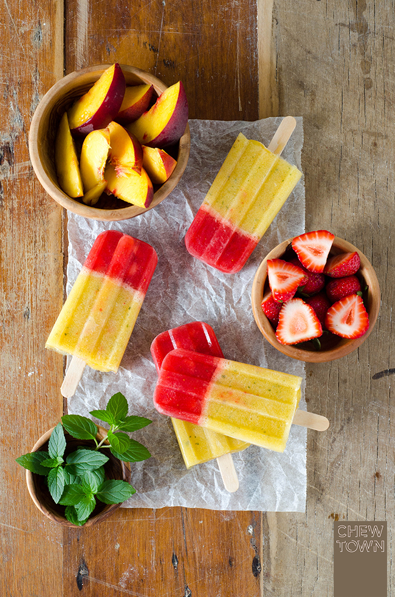

Strawberry and peach popsicles

There's nothing like enjoying homemade fruit popsicles on a hot day. The problem with the store-bought kind is that they typically contain high fructose corn syrup and artificial flavors. Not these! All my popsicle recipes are 100 calories or less and made with only natural sweeteners!
Ingredients
- 3 cups strawberries, pureed to 1 ½ cup
- 3 cups peaches, peeled and sliced, pureed to 1 ½ cup
- 2 tablespoons honey, divided
- ⅔ cup vanilla greek yogurt
Steps
- In a blender, puree strawberries with four teaspoons honey then set aside. Clean blender, puree sliced peaches with two teaspoons of honey, set aside.
- Layer the popsicles as follows; 2 teaspoons strawberry puree, 1 teaspoon yogurt, 2 teaspoons peach puree and repeat. Make a fruit puree your last layer.
- Tap the mold on the counter to make sure all of the layers settle. Use a small spoon to drag vertically from the bottom to the top of the mold a few times to create a swirled pattern.
- Gently tap the molds on the countertop to remove any air bubbles. Insert the popsicle sticks, and then freeze for at least 6 hours, or overnight
Recipe reference here
Image source
You may also like:
Back to main menu